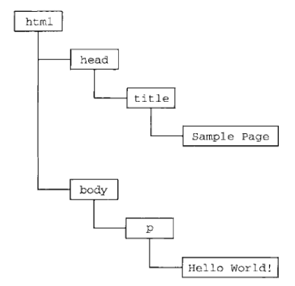

JavaScript高级程序设计-1-js简介
学习《JavaScript高级程序设计》过程中记录的笔记，本节涉及JavaScript和ECMAScript的关系，DOM、BOM等概念的简单介绍。
JavaScript实现
虽然JavaScript和ECMAScript通常视为一个概念，但JavaScript含义比ECMA-262中规定的要多，一个完整的JavaScript实现由三个部分组成：
- 核心（ECMAScript）
- 文档对象模型（DOM）
- 浏览器对象模型（BOM）
ECMAScript
由ECMA-262定义的ECMAScript和Web浏览器没有依赖关系。实际上，ECMAScript并不包括输入和输出，定义的只有语言的基础，在此基础上的各种实现可以构建更完善的脚本语言。
常见的Web浏览器只是ECMAScript实现的宿主环境之一，宿主环境不仅提供基本的实现，同时也会提供语言的扩展，以便语言与环境之间的对接交互，而这些扩展——如DOM则利用ECMAScript的核心类型和语法提供更多更具体的功能，一遍实现针对环境的操作，其他宿主环境包括Node（服务端的JS平台）和Adebe Flash。
ECMA-262规定了如下的部分：
- 语法
- 类型
- 语句
- 关键字
- 保留字
- 操作符
- 对象
ECMAScript就是对实现该标准规定的各个方面内容的语言的描述，JavaScript是ECMAScript的实现之一, Adobe ActionScript同样是ECMAScript的实现之一。以后简称ECMAScript为ES。
ES版本
- ES1： 本质与JavaScript 1.1相同，但删除了针对浏览器的代码并进行改动，支持Unicode从而支持多语言开发，对象编程平台无关（如Date对象）
- ES2：较ES1没什么修改
- ES3: 标志着ES成为一门真正的编程语言，修改涉及字符串处理、错误定义、数值输出，添加正则表达式、控制语句、try-catch异常处理，添加国际化
- ES4：对ES3的全面修订，基本算是一门新的语言，包括强类型、新语句和数据结构、类、经典继承、数据交互等，但由于跨越太大，最后放弃。
- ES5：实际是对ES3的修改（ES3.1），澄清歧义、添加JSON对象、继承的方法、高级属性定义、以及严格模式，对ES引擎解释和执行代码进行补充说明
ES兼容
ES兼容就是指：ES的实现必须做到如下：
- 支持ECMA-262描述的所有“类型，值，对象，属性，函数以及程序句法和语法”
- 支持Unicode字符标准
兼容的实现可以做如下扩展： - 添加ECMA-262没有描述的“类型、值、对象、属性和函数”
- 支持ECMA-262没有定义的“程序和正则表达式语法”，即可以修改和扩展内置的正则表达式语法
浏览器对ES的支持
原文中主要给出的是ES5以下的版本支持情况，但对现在的情况而言，IE9即其他现代浏览器都至少支持ES5，但由于IE系列对CSS3的支持不足，所以开发的话，若需要兼容IE则主要是指CSS3的兼容。
文档对象模型（DOM）
文档对象模型（DOM，Document Object Model）是针对XML但进过扩展用于HTML的API。DOM把整个页面映射为一个多层节点结构。HTML或XML页面中每个组成部分都是某种类型的节点，这些节点又包含不同类型的数据。
如下例：1
2
3
4
5
6
7
8<html>
<head>
<title>Sample Page</title>
</head>
<body>
<p>Hello World</a>
</body>
</html>
上述代码可转化为如下的分层节点图表示：

通过DOM创建的表示文档的树形图，开发者获取了控制页面内容和结构的主动权，借助DOM提供的API，开发者可轻松的删除、添加、替换或修改任何节点。
由于IE和Netscape支持不同的DHTML，所以需要一个统一的标准，即W3C定义的DOM。注：其实DOM并不是针对JS的，很多其他语言也实现了DOM，但由于浏览器中基于ES实现的DOM已经成为JS的一个重要组成部分，所以一般指浏览器环境下的DOM。
W3C定义的DOM是有级别的，DOM1级由两个模块组成，DOM Core（核心）和DOM HTML， 其中核心规定的是如何映射基于XML的文档结构，以便简化对文档中任意部分的访问和操作。DOM HTML模块则在核心基础上加以扩展，添加了对HTML的对象和方法。
如果说DOM1的目标是映射文档结构，那么DOM2则宽泛很多了，DOM2在原来的基本上扩展了鼠标和用户界面事件、范围、遍历（迭代DOM文档的方法）等细分模块，而且通过对象接口增加了对CSS的支持，DOM1中的核心模块被扩展为支持XML命名空间。
DOM2引入如下新模块、类型、接口：
- DOM视图（DOM View）: 定义了跟踪不同文档（如应用CSS之前和之后的文档）视图的接口
- DOM事件（DOM Events）: 定义了事件和事件处理的接口
- DOM样式（DOM Style）：定义了基于CSS为元素应用样式的接口
- DOM遍历和范围（DOM Traversal and Range）：定义了遍历和操作文档树的接口
DOM3则进一步扩展了DOM：引入以统一方式加载和保存文档的方法（定义在DOM加载和保存（DOM Load and Save）模块中），新增验证文档的方法（定义在DOM验证（DOM Validation）模块中），核心模块开始支持XML 1.0规范，涉及XML Infoset，XPath和XML Base。
注：DOM0级其实不存在，仅作为一个参考，具体指的是最初支持的DHTML。
其他DOM标准：除了DOM核心和DOM HTML接口之外，另外的一些语言也针对DOM进行了定义，每种语言的DOM标准都添加了相关的新方法和接口，例如：
- SVG(Scalable Vector Graphic 可伸缩矢量图) 1.0
- MathML(Mathematical Markup Language 数学标记语言) 1.0
- SMIL(Synchronized Multimedia Integration Language 同步多媒体集成语言)
浏览器对象模型（BOM）
开发者使用BOM（Browser Object Model）可以控制浏览器显示的页面意外的部分，如在HTML5中把很多BOM功能写入了正式规范中。
从根本上说，BOM只处理浏览器窗口和框架，但一般把所有针对浏览器的JS扩展都算作BOM的一部分，包括：
- 弹出新浏览器窗口的功能
- 移动、缩放、关闭浏览器窗口的功能
- 提供浏览器详细信息的navigator对象
- 提供浏览器所加载页面的详细信息的location对象
- 提供用户显示器分辨率详细信息的screen对象
- 对cookies的支持
- 像XMLHttpRequest和IE的ActiveXObject这样的自定义对象
由于BOM没有标准可遵循，因此每个浏览器可以有自己的实现，但存在一些事实标准，如window和navigator对象，每个浏览器都会为这两个对象及其他对象定义自己的属性和方法。而HTML5后，这些BOM的实现细节则越来越兼容了。